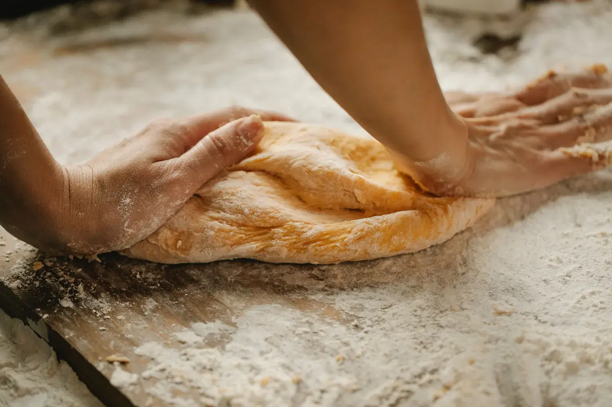

Hajnalban két testvér, egy kemence.
Egy kis pékség Pécs belvárosában, ahol a friss kenyér előtt jóval elkezdődik a nap.

Egy hely, ahová jó reggel érkezni.
Mielőtt kinyit a pékség, Marci már dolgozik. Formázza a tésztát, figyeli a kenyereket, és sorra készíti elő, ami aznap a pultra kerül. Nem látni mindezt, amikor reggel benyitsz, de a frissen sült kenyér illatán érezni, hogy a Hajnalban korán kezdődik a nap.
Lili akkor veszi át a reggel másik felét, amikor megérkeznek az első vendégek. Ismeri a pult kínálatát, segít választani, kávét készít, és figyel arra, hogy annak is jó legyen betérni, aki csak néhány percre ugrik be. Marci és Lili testvérek. Egyikük a kemencénél, másikuk a pultnál teszi hozzá a magáét ugyanahhoz a kis pékséghez.

Idő, liszt, víz és figyelem.
A kovász liszt és víz élő keveréke. Etetéssel tartjuk aktívan; az érés ideje formálja a tészta állagát és ízét. Nálunk ez a kenyérkészítés mindennapi része.
Marci naponta korlátozott mennyiséget süt. A kedvencek délre elfogyhatnak, ezért egész kenyeret előre is rendelhetsz.
Kovászos
receptek
2 kenyér · 1 zsemle
Próbáld ki otthon is a kovászt.
Két kenyér és egy zsemle receptjét gyűjtöttük össze egy nyomtatható füzetbe. A hozzávalók, a hajtogatás és a sütés lépései egy helyen vannak.
Letöltöm a kovászos recepteket (PDF)4 oldalas, nyomtatható PDFÜlj le egy kicsit.
A Hajnalban kovászos kenyér, péksütemény és egyszerű reggeli vár. A kenyerek mellett pirítós, szendvics és kávé is kerül az asztalra. Tizenkét ülőhely van, így be lehet ugrani munkába menet egy kenyérért, vagy le lehet ülni egy nyugodtabb reggelire.
Pécs belvárosában, egy csendes utcasarkon várunk. Ha a kovász jobban érdekel, havonta egy szombaton workshopot is tartunk.